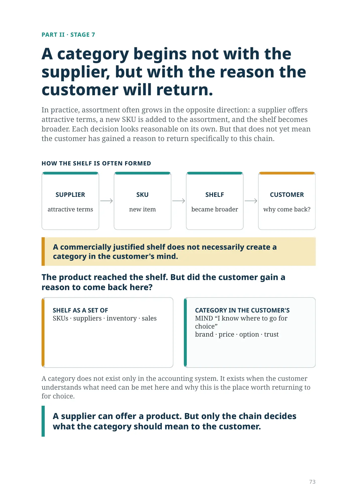
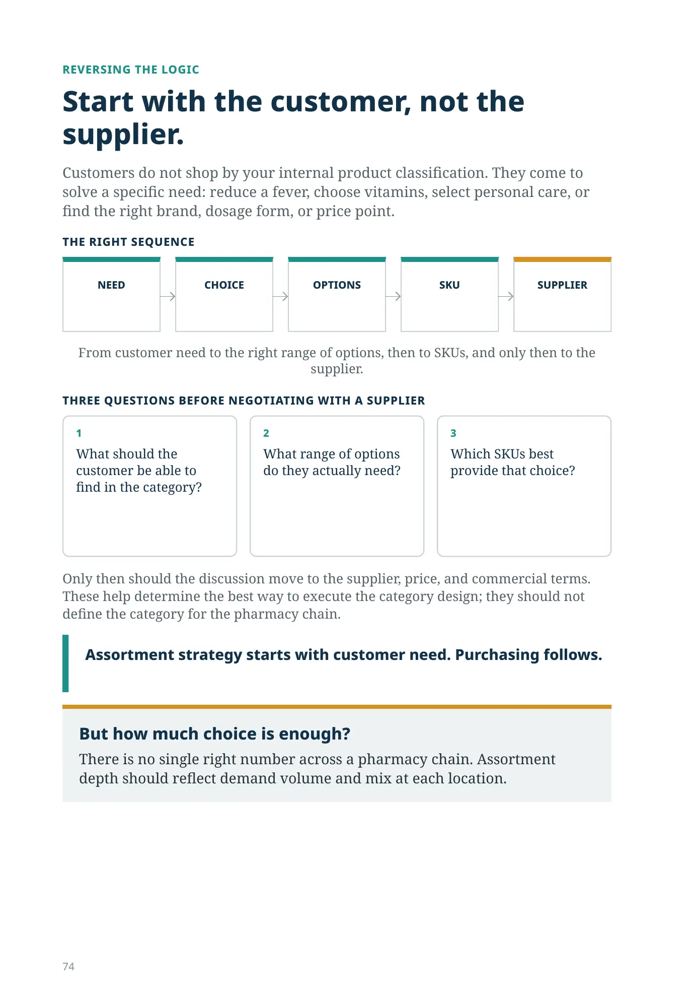
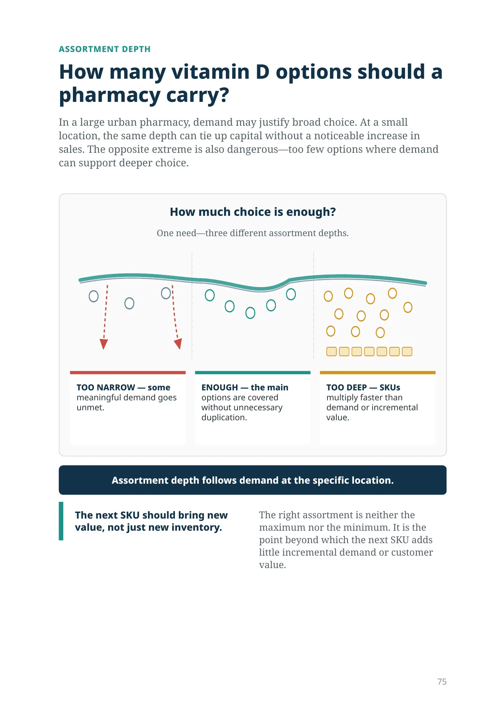
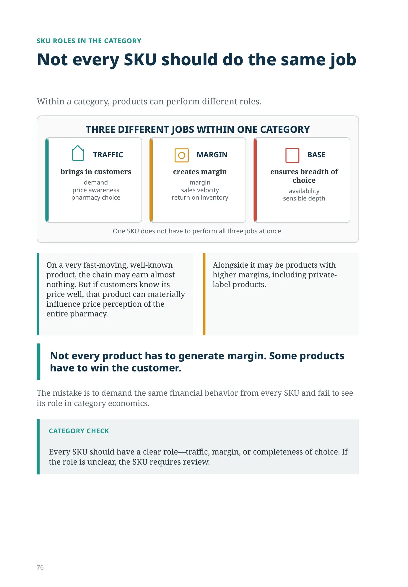
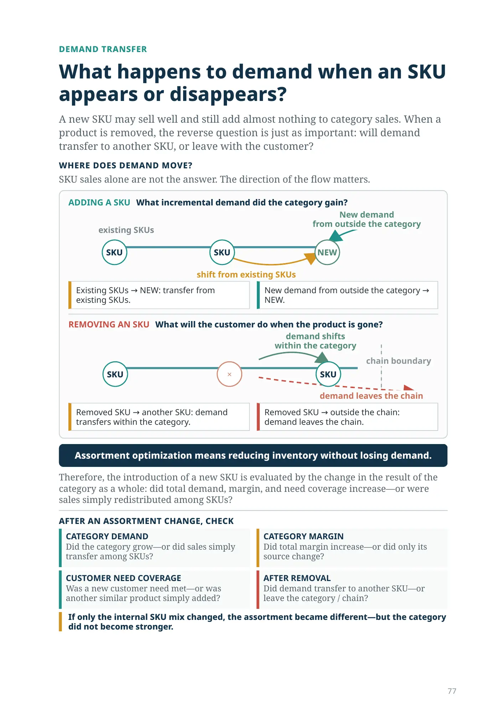
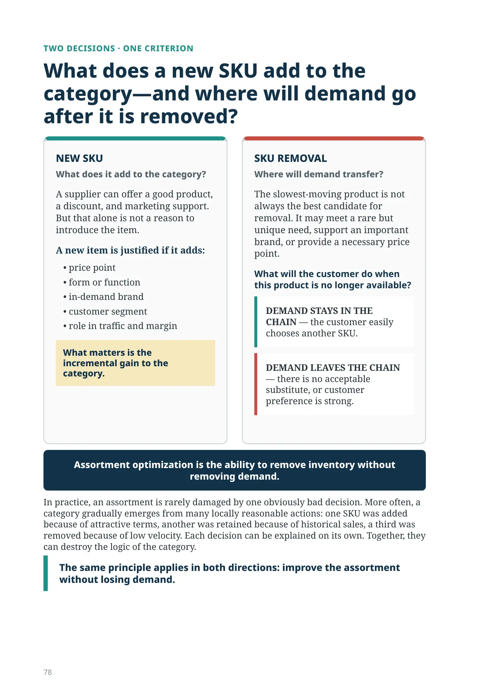
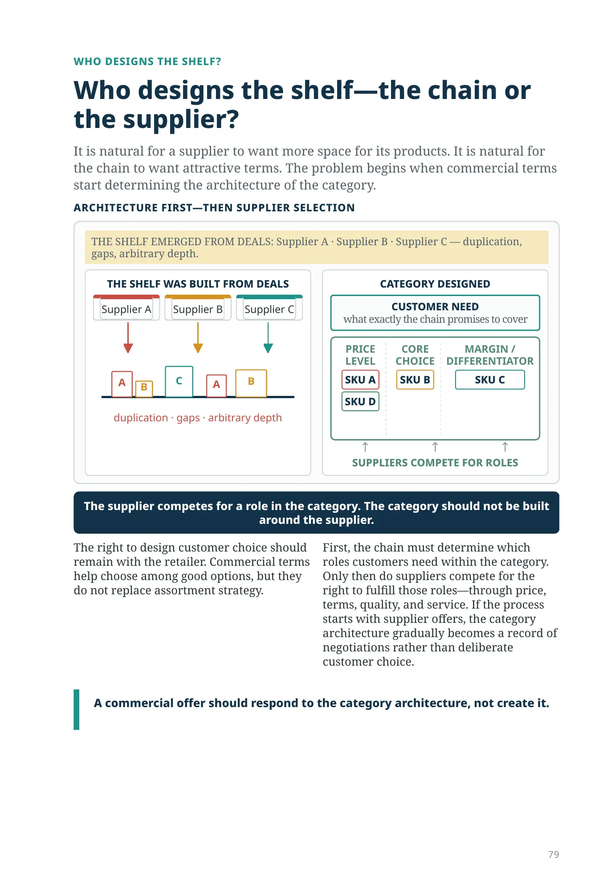
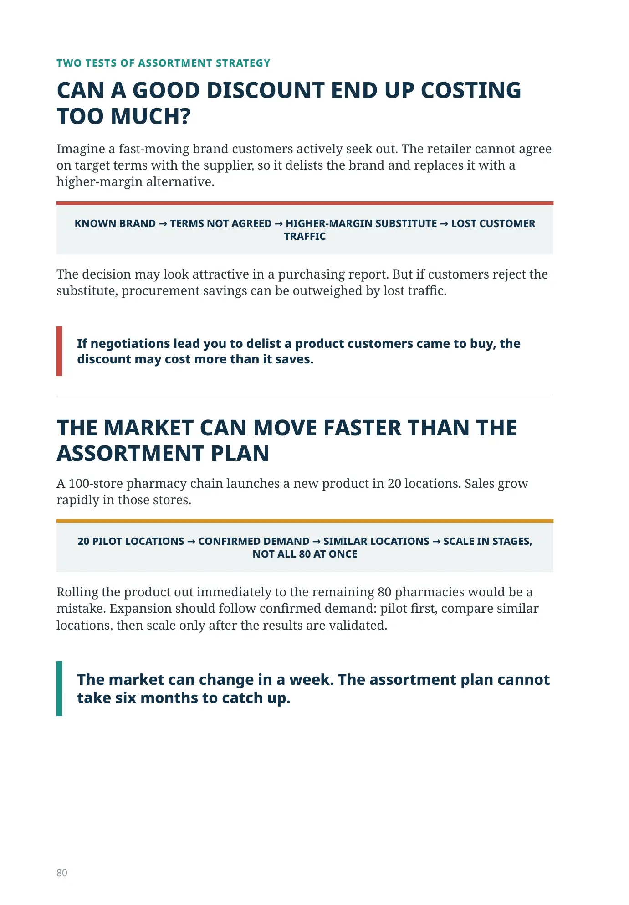
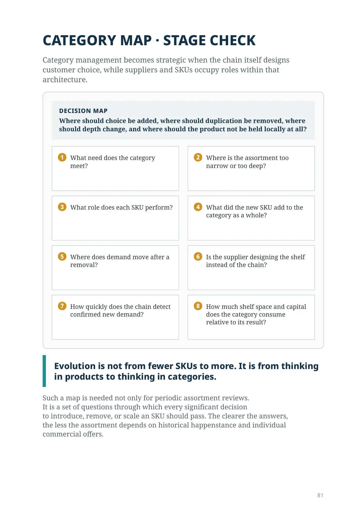
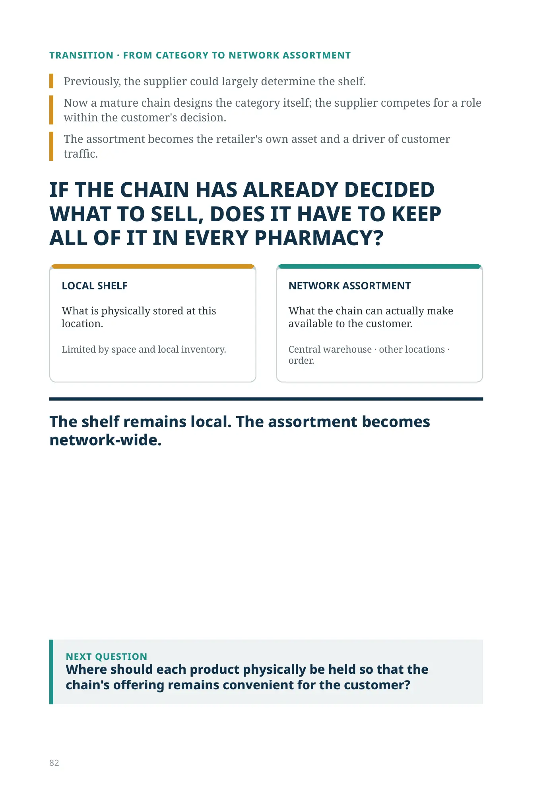
Do you have several products—or do you have a category?
PART II · STAGE 7
A category begins not with the supplier, but with the reason the customer will return.
In practice, assortment often grows in the opposite direction: a supplier offers attractive terms, a new SKU is added to the assortment, and the shelf becomes broader. Each decision looks reasonable on its own. But that does not yet mean the customer has gained a reason to return specifically to this chain.
HOW THE SHELF IS OFTEN FORMED
SUPPLIER
attractive terms
SKU
new item
SHELF
became broader
CUSTOMER
why come back?
A commercially justified shelf does not necessarily create a category in the customer's mind.
The product reached the shelf. But did the customer gain a reason to come back here?
SHELF AS A SET OF
SKUs · suppliers · inventory · sales
CATEGORY IN THE CUSTOMER'S
MIND “I know where to go for choice”
brand · price · option · trust
A category does not exist only in the accounting system. It exists when the customer understands what need can be met here and why this is the place worth returning to for choice.
A supplier can offer a product. But only the chain decides what the category should mean to the customer.
REVERSING THE LOGIC
Start with the customer, not the supplier.
Customers do not shop by your internal product classification. They come to solve a specific need: reduce a fever, choose vitamins, select personal care, or find the right brand, dosage form, or price point.
THE RIGHT SEQUENCE
- NEED
- CHOICE
- OPTIONS
- SKU
- SUPPLIER
From customer need to the right range of options, then to SKUs, and only then to the supplier.
THREE QUESTIONS BEFORE NEGOTIATING WITH A SUPPLIER
- What should the customer be able to find in the category?
- What range of options do they actually need?
- Which SKUs best provide that choice?
Only then should the discussion move to the supplier, price, and commercial terms. These help determine the best way to execute the category design; they should not define the category for the pharmacy chain.
Assortment strategy starts with customer need. Purchasing follows.
ASSORTMENT DEPTH
How many vitamin D options should a pharmacy carry?
In a large urban pharmacy, demand may justify broad choice. At a small location, the same depth can tie up capital without a noticeable increase in sales. The opposite extreme is also dangerous—too few options where demand can support deeper choice.
How much choice is enough?
One need—three different assortment depths.
TOO NARROW — some meaningful demand goes unmet.
ENOUGH — the main options are covered without unnecessary duplication.
TOO DEEP — SKUs multiply faster than demand or incremental value.
Assortment depth follows demand at the specific location.
The next SKU should bring new value, not just new inventory.
The right assortment is neither the maximum nor the minimum. It is the point beyond which the next SKU adds little incremental demand or customer value.
SKU ROLES IN THE CATEGORY
Not every SKU should do the same job
Within a category, products can perform different roles.
TRAFFIC
brings in customers
demand
price awareness
pharmacy choice
MARGIN
creates margin
margin
sales velocity
return on inventory
BASE
ensures breadth of choice
availability
sensible depth
One SKU does not have to perform all three jobs at once.
On a very fast-moving, well-known product, the chain may earn almost nothing. But if customers know its price well, that product can materially influence price perception of the entire pharmacy.
Alongside it may be products with higher margins, including private-label products.
Not every product has to generate margin. Some products have to win the customer.
The mistake is to demand the same financial behavior from every SKU and fail to see its role in category economics.
CATEGORY CHECK
Every SKU should have a clear role—traffic, margin, or completeness of choice. If the role is unclear, the SKU requires review.
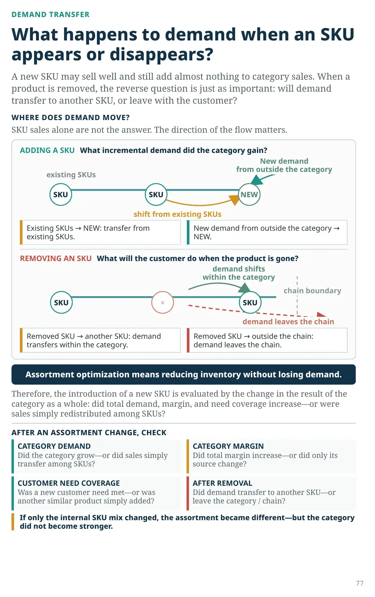
DEMAND TRANSFER
What happens to demand when an SKU appears or disappears?
A new SKU may sell well and still add almost nothing to category sales. When a product is removed, the reverse question is just as important: will demand transfer to another SKU, or leave with the customer?
Where does demand move?
SKU sales alone are not the answer. The direction of the flow matters.
ADDING A SKU What incremental demand did the category gain?
Existing SKUs → NEW: transfer from existing SKUs.
New demand from outside the category → NEW.
REMOVING AN SKU What will the customer do when the product is gone?
Removed SKU → another SKU: demand transfers within the category.
Removed SKU → outside the chain: demand leaves the chain.
Assortment optimization means reducing inventory without losing demand.
Therefore, the introduction of a new SKU is evaluated by the change in the result of the category as a whole: did total demand, margin, and need coverage increase—or were sales simply redistributed among SKUs?
AFTER AN ASSORTMENT CHANGE, CHECK
CATEGORY DEMAND Did the category grow—or did sales simply transfer among SKUs?
CATEGORY MARGIN Did total margin increase—or did only its source change?
CUSTOMER NEED COVERAGE Was a new customer need met—or was another similar product simply added?
AFTER REMOVAL Did demand transfer to another SKU—or leave the category / chain?
If only the internal SKU mix changed, the assortment became different—but the category did not become stronger.
TWO DECISIONS · ONE CRITERION
What does a new SKU add to the category—and where will demand go after it is removed?
NEW SKU
What does it add to the category?
A supplier can offer a good product, a discount, and marketing support. But that alone is not a reason to introduce the item.
A new item is justified if it adds:
- price point
- form or function
- in-demand brand
- customer segment
- role in traffic and margin
What matters is the incremental gain to the category.
SKU REMOVAL
Where will demand transfer?
The slowest-moving product is not always the best candidate for removal. It may meet a rare but unique need, support an important brand, or provide a necessary price point.
What will the customer do when this product is no longer available?
DEMAND STAYS IN THE CHAIN — the customer easily chooses another SKU.
DEMAND LEAVES THE CHAIN — there is no acceptable substitute, or customer preference is strong.
Assortment optimization is the ability to remove inventory without removing demand.
In practice, an assortment is rarely damaged by one obviously bad decision. More often, a category gradually emerges from many locally reasonable actions: one SKU was added because of attractive terms, another was retained because of historical sales, a third was removed because of low velocity. Each decision can be explained on its own. Together, they can destroy the logic of the category.
The same principle applies in both directions: improve the assortment without losing demand.
WHO DESIGNS THE SHELF?
Who designs the shelf—the chain or the supplier?
It is natural for a supplier to want more space for its products. It is natural for the chain to want attractive terms. The problem begins when commercial terms start determining the architecture of the category.
ARCHITECTURE FIRST—THEN SUPPLIER SELECTION
THE SHELF EMERGED FROM DEALS: Supplier A · Supplier B · Supplier C — duplication, gaps, arbitrary depth.
THE SHELF WAS BUILT FROM DEALS
duplication · gaps · arbitrary depth
CATEGORY DESIGNED
CUSTOMER NEEDwhat exactly the chain promises to cover
LEVELSKU ASKU D
CHOICESKU B
DIFFERENTIATORSKU C
SUPPLIERS COMPETE FOR ROLES
The supplier competes for a role in the category. The category should not be built around the supplier.
The right to design customer choice should remain with the retailer. Commercial terms help choose among good options, but they do not replace assortment strategy.
First, the chain must determine which roles customers need within the category. Only then do suppliers compete for the right to fulfill those roles—through price, terms, quality, and service. If the process starts with supplier offers, the category architecture gradually becomes a record of negotiations rather than deliberate customer choice.
A commercial offer should respond to the category architecture, not create it.
TWO TESTS OF ASSORTMENT STRATEGY
CAN A GOOD DISCOUNT END UP COSTING TOO MUCH?
Imagine a fast-moving brand customers actively seek out. The retailer cannot agree on target terms with the supplier, so it delists the brand and replaces it with a higher-margin alternative.
KNOWN BRAND → TERMS NOT AGREED → HIGHER-MARGIN SUBSTITUTE → LOST CUSTOMER TRAFFIC
The decision may look attractive in a purchasing report. But if customers reject the substitute, procurement savings can be outweighed by lost traffic.
If negotiations lead you to delist a product customers came to buy, the discount may cost more than it saves.
THE MARKET CAN MOVE FASTER THAN THE ASSORTMENT PLAN
A 100-store pharmacy chain launches a new product in 20 locations. Sales grow rapidly in those stores.
20 PILOT LOCATIONS → CONFIRMED DEMAND → SIMILAR LOCATIONS → SCALE IN STAGES, NOT ALL 80 AT ONCE
Rolling the product out immediately to the remaining 80 pharmacies would be a mistake. Expansion should follow confirmed demand: pilot first, compare similar locations, then scale only after the results are validated.
The market can change in a week. The assortment plan cannot take six months to catch up.
CATEGORY MAP · STAGE CHECK
Category management becomes strategic when the chain itself designs customer choice, while suppliers and SKUs occupy roles within that architecture.
DECISION MAP
Where should choice be added, where should duplication be removed, where
should depth change, and where should the product not be held locally at all?
- 1What need does the category meet?
- 2Where is the assortment too narrow or too deep?
- 3What role does each SKU perform?
- 4What did the new SKU add to the category as a whole?
- 5Where does demand move after a removal?
- 6Is the supplier designing the shelf instead of the chain?
- 7How quickly does the chain detect confirmed new demand?
- 8How much shelf space and capital does the category consume relative to its result?
Evolution is not from fewer SKUs to more. It is from thinking in products to thinking in categories.
Such a map is needed not only for periodic assortment reviews.
It is a set of questions through which every significant decision
to introduce, remove, or scale an SKU should pass. The clearer the answers,
the less the assortment depends on historical happenstance and individual
commercial offers.
TRANSITION · FROM CATEGORY TO NETWORK ASSORTMENT
Previously, the supplier could largely determine the shelf.
Now a mature chain designs the category itself; the supplier competes for a role within the customer's decision.
The assortment becomes the retailer's own asset and a driver of customer traffic.
IF THE CHAIN HAS ALREADY DECIDED WHAT TO SELL, DOES IT HAVE TO KEEP ALL OF IT IN EVERY PHARMACY?
LOCAL SHELF
What is physically stored at this location.
Limited by space and local inventory.
NETWORK ASSORTMENT
What the chain can actually make available to the customer.
Central warehouse · other locations · order.